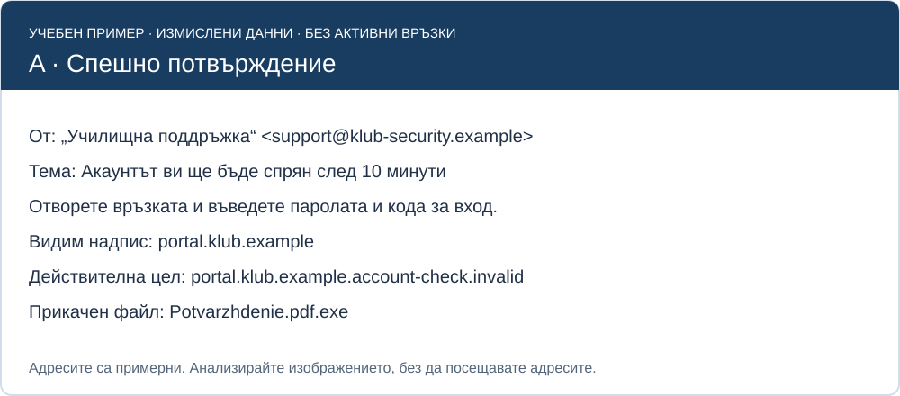
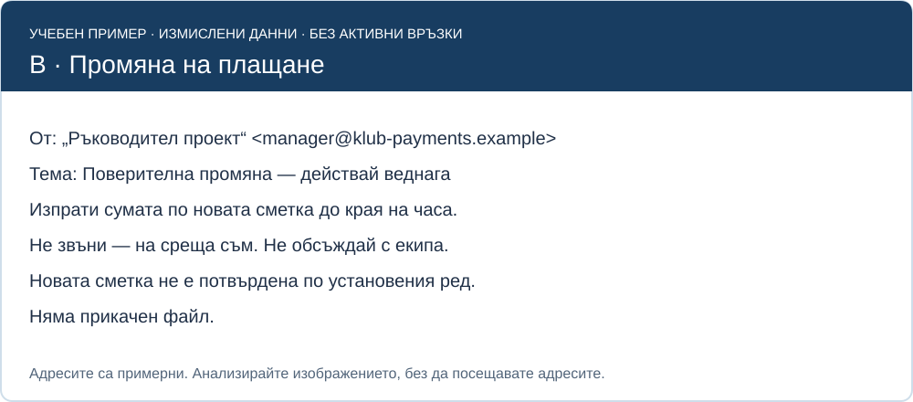
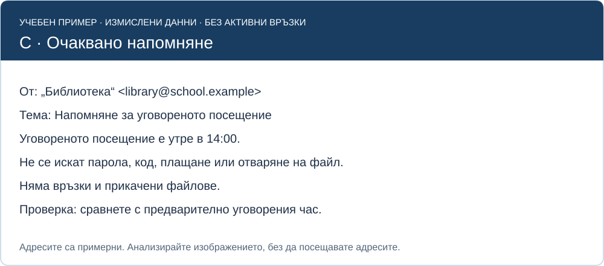

12. клас · Урок 59
Разпознаване на фишинг атаки и социално инженерство
Ще анализирате изображения на измислени съобщения и ще посочите признаци за фишинг и социално инженерство. В изображенията няма активни връзки или реални прикачени файлове.
1. Как действа социалното инженерство?
То използва доверие, страх, любопитство или натиск, за да предизвика действие. Фишингът е измамно съобщение, което може да иска тайни, плащане, отваряне на файл или посещение на подменена страница. Нападението може да използва имейл, SMS, чат, обаждане или QR код.
Познато име, лого, добър правопис и HTTPS сами не доказват истински подател. Проверете контекста, действието и реалната цел на адреса. При съмнение използвайте предварително известен канал, а не контактите в съмнителното съобщение.
2. Учебен контекст
За казуса официалният портал е portal.klub.example, а предварително известният адрес на библиотеката е library@school.example. Всички домейни са измислени за обучение. Не ги посещавайте. Показаният подател сам по себе си не доказва автентичност.
3. Три изображения за анализ

В A целта е portal.klub.example.account-check.invalid. Низът на познатия портал стои в началото, но адресът завършва с друг учебен домейн. Файл с крайно разширение .exe не е PDF само защото името съдържа .pdf.


4. Как формулираме извод?
| Наблюдение | Обоснован извод | Прекомерен извод |
|---|---|---|
| Иска се парола и еднократен код | Не изпращаме тайните; проверяваме и докладваме | Знаем кой точно е нападателят |
| Домейнът се различава от известния | Има несъответствие, изискващо независима проверка | Вече е доказана зараза на компютъра |
| Очакван час, без искане за действие | По-малко предупредителни признаци; сверяваме уговорката | Всяко следващо съобщение от този подател е безопасно |
5. Практическа работа
- За A, B и C запишете подател, искано действие, адрес/файл и натиск за спешност.
- Посочете поне четири конкретни признака в A и поне два в B.
- Обяснете защо C не може да се обяви за напълно проверено само от изображението.
- Предложете независима проверка за всяко: например предварително известен служебен контакт или сверяване с уговорката.
- Предайте таблица „Факт — риск — действие — какво още не знаем“. Не отваряйте адресите и не създавайте изпълними файлове.
Критерии — 10 точки: разчетени съобщения (3), конкретни признаци и адресен анализ (3), пропорционални изводи (2), подходяща независима проверка (2).
Примерна самопроверка
A: непознат домейн на подателя, заплаха за спиране, кратък срок, парола и код, разлика в целта и .exe прикачен файл. B: непотвърдено плащане, натиск за спешност и искане да се пропусне разговорът с екипа. C е съвместимо с очаквано напомняне, но часът и произходът се сверяват.
Източник
FTC — разпознаване и избягване на фишинг. Изображенията и адресите са специално създадени учебни примери; няма реални съобщения или услуги.